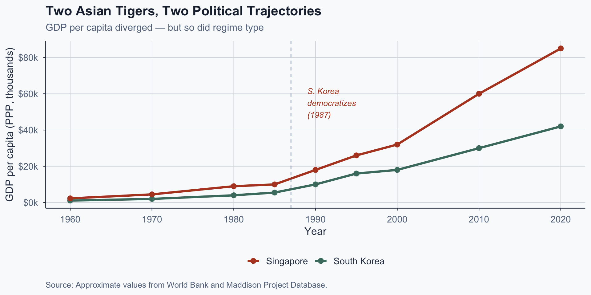
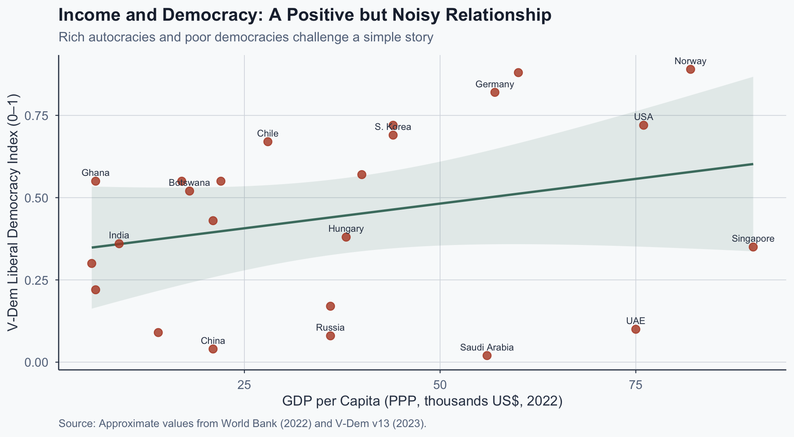
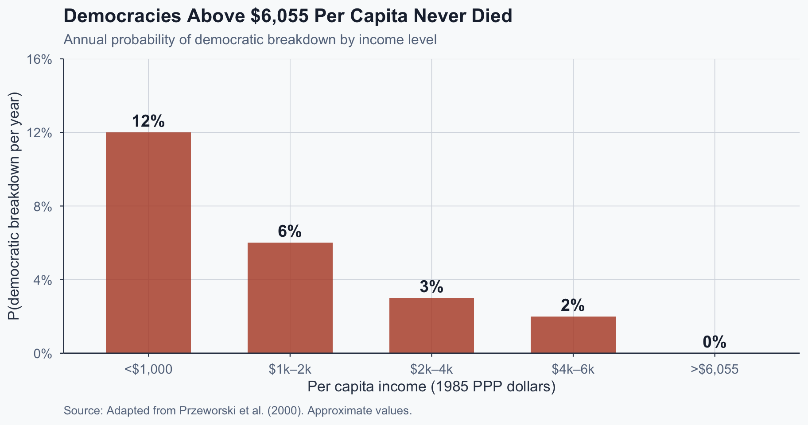
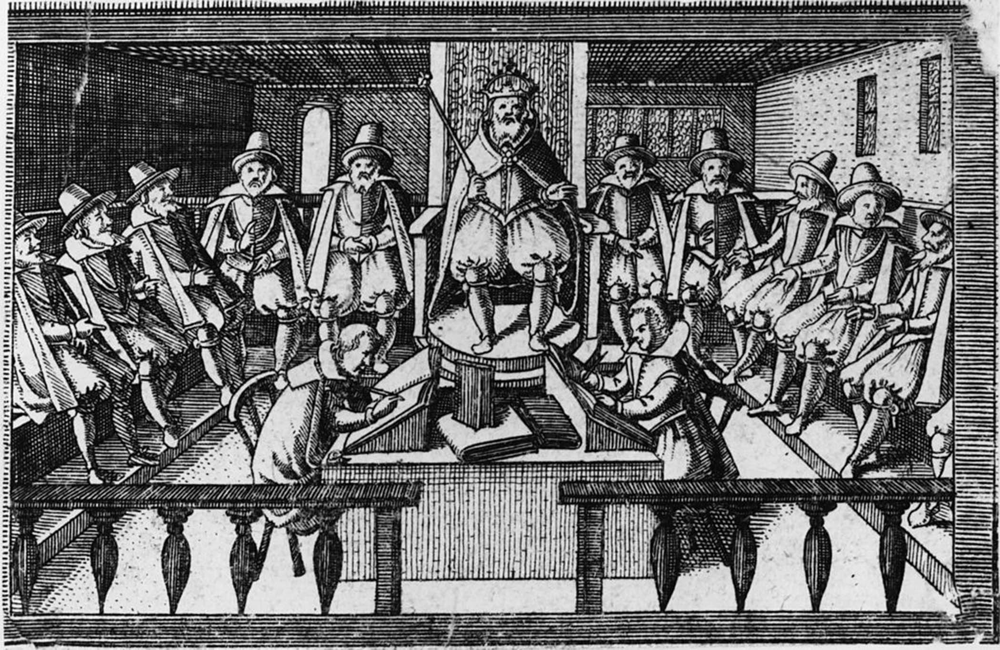
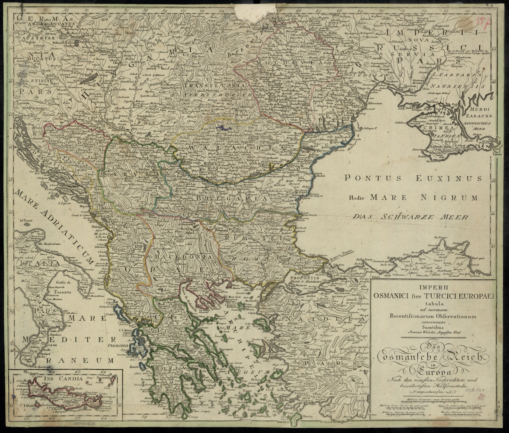
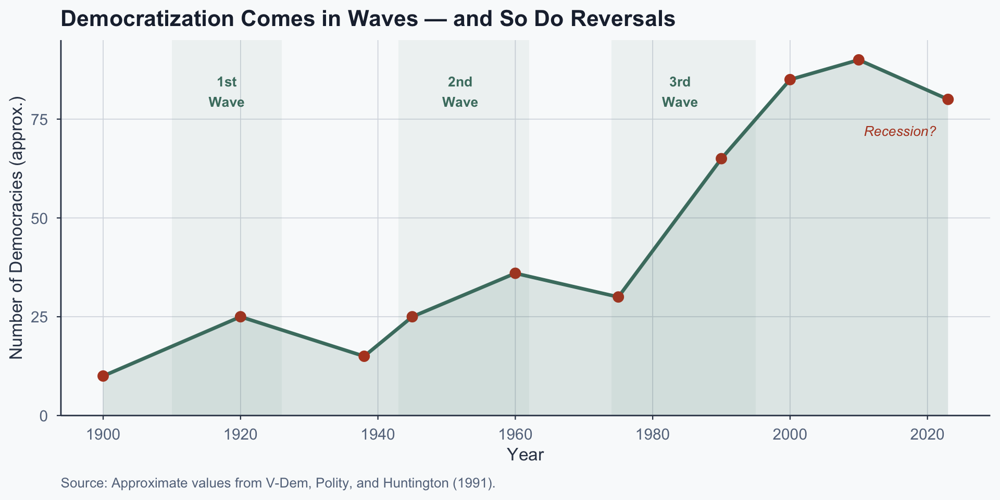

![]()
%%{init:{
"flowchart":{"useMaxWidth":true,"nodeSpacing":60,"rankSpacing":80},
"themeVariables":{"fontSize":"22px"},
"width":1150,
"height":650
}}%%
flowchart LR
A["Economic<br/>Growth"] --> B["Urbanization"]
B --> C["Education"]
C --> D["Middle<br/>Class"]
D --> E["Political<br/>Demands"]
E --> F["Democracy"]
style A fill:#4a7c6f,color:#fff,stroke:#334155
style F fill:#4a7c6f,color:#fff,stroke:#334155
style D fill:#b7943a,color:#fff,stroke:#334155
Comparative Politics
Lecture 5: Democratization
The Puzzle
South Korea vs. Singapore, c. 1985
| Indicator | South Korea | Singapore |
|---|---|---|
| GDP per capita (PPP) | ~$6,000 | ~$8,000 |
| Urbanization | 65% | 100% |
| Adult literacy | 95%+ | 90%+ |
| Export-oriented economy | Yes | Yes |
| Outcome by 1995 | Democracy | Autocracy |
Both countries fit the “modernization profile.” Only one democratized.
Two Paths from the Same Starting Point

Figure 1: Approximate values from World Bank and Maddison Project.
Your Prediction
Why do you think South Korea democratized and Singapore did not?
So What?
If economic development alone explained democracy, these two cases should look the same. They don’t.
Something beyond income must drive democratization.
Next → What does modernization theory actually predict, and where does it break down?
Modernization Theory
Lipset’s Hypothesis
Lipset (1959): economic development produces democracy.
“The more well-to-do a nation, the greater the chances that it will sustain democracy.” — Lipset (1959, p. 75)
The logic is structural:
- Urbanization concentrates citizens
- Education raises political awareness
- A middle class demands participation
- Wealth reduces zero-sum conflict
Source: Wikimedia Commons, public domain.
The Modernization Causal Chain
The Cross-Sectional Evidence

Figure 2: Approximate values from World Bank (2022) and V-Dem v13.
But: Does Development Cause Democracy?
Przeworski & Limongi (1997) make a crucial distinction:
Endogenous: Development causes transitions to democracy
- Prediction: rich autocracies should eventually democratize
Exogenous: Development helps democracies survive
- Prediction: rich democracies survive; rich autocracies stay autocratic
The same correlation supports both causal stories.
Transition vs. Survival
| Endogenous | Exogenous | |
|---|---|---|
| Mechanism | Development → transition | Development → survival |
| Rich autocracies | Should democratize | Can persist indefinitely |
| Poor democracies | Shouldn’t exist | Exist but are fragile |
| Key test case | Singapore, UAE | India, Botswana |
Singapore and the UAE are the decisive cases: rich, yet persistently autocratic.
The Survival Finding

Figure 3: Adapted from Przeworski et al. (2000).
Boix & Stokes: A Response
Boix & Stokes (2003) counter that development does increase transition probability — but slowly, and conditional on declining inequality. The sample period (post-1950) may be too short to detect it.
The debate is unresolved. What endures is the analytical distinction: transition and survival are different phenomena with different causes.
So What?
Modernization theory captures a real correlation but lacks a causal mechanism.
Why would a rational elite that holds power ever voluntarily give it up?
Next → A model that answers this question directly.
The Strategic Logic
Why Would Elites Concede?
The central puzzle of democratization:
- Elites hold power and wealth
- Democracy redistributes from rich to poor
- Giving up control seems irrational
Acemoglu & Robinson (2001, 2006) answer: democracy is not a gift — it is a strategic concession.
The Setup: Inequality and Threat
Two players: Elite (rich minority) and Citizens (poor majority).
- Elite controls policy under autocracy
- Citizens can threaten revolution
- Revolution is costly: destroys a fraction of wealth
- But if it succeeds, citizens seize everything
The elite’s problem: how to defuse the threat credibly.
The Game
%%{init:{
"flowchart":{"useMaxWidth":true,"nodeSpacing":50,"rankSpacing":70},
"themeVariables":{"fontSize":"20px"},
"width":1150,
"height":650
}}%%
flowchart LR
N["Nature:<br/>Is revolutionary<br/>threat credible?"] -->|"No"| SQ["Status Quo<br/>(Elite keeps power)"]
N -->|"Yes"| E["Elite chooses"]
E -->|"Repress<br/>(cost μ)"| REP["Repression"]
E -->|"Promise redistribution<br/>(tax rate τ̂)"| PROM["Temporary<br/>Redistribution"]
E -->|"Democratize<br/>(permanent τ*)"| DEM["Democracy"]
PROM -.->|"Threat recedes →<br/>elite reneges"| SQ2["Revert to<br/>Status Quo"]
style SQ fill:#64748b,color:#fff,stroke:#334155
style REP fill:#b44527,color:#fff,stroke:#334155
style PROM fill:#b7943a,color:#fff,stroke:#334155
style DEM fill:#4a7c6f,color:#fff,stroke:#334155
style SQ2 fill:#64748b,color:#fff,stroke:#334155
The Commitment Problem
Why can’t the elite simply promise to redistribute?
- Today: threat is real → elite offers tax rate τ̂
- Tomorrow: threat recedes → elite reneges, sets τ = 0
- Citizens anticipate this → the promise is not credible
The elite’s promise lacks commitment because they control future policy.
Why Democracy Is the Solution
Democracy transfers policy control permanently:
- Under democracy, the median voter sets tax policy
- The elite cannot unilaterally lower taxes later
- Democracy binds future governments, not just today’s
Democracy is not a value judgment — it is the only credible commitment device when inequality is high enough.
The Equilibrium Regions
%%{init:{
"flowchart":{"useMaxWidth":true,"nodeSpacing":60,"rankSpacing":80},
"themeVariables":{"fontSize":"18px"},
"width":1000,
"height":450
}}%%
flowchart LR
A["Low<br/>Inequality"] -->|"No threat"| B["Status Quo"]
C["Moderate<br/>Inequality"] -->|"Recurring<br/>threat"| D["Temporary<br/>Redistribution"]
E["High<br/>Inequality"] -->|"Credible<br/>threat"| F["Democratization"]
G["Very High<br/>Inequality"] -->|"Extreme<br/>threat"| H["Revolution"]
style B fill:#64748b,color:#fff,stroke:#334155
style D fill:#b7943a,color:#fff,stroke:#334155
style F fill:#4a7c6f,color:#fff,stroke:#334155
style H fill:#b44527,color:#fff,stroke:#334155
The Core Prediction
Democratization is most likely when:
- Inequality is high — creates a credible revolutionary threat
- Repression is costly — limits the elite’s alternative
- Elites value the future — making commitment valuable
The “zone of democratization” is middle-income, unequal societies where the threat is real but revolution is not yet the equilibrium.
Exercise 2: Apply the Model
Class Exercise (5 min)
Prompt: Using Acemoglu & Robinson’s framework:
- Why did South Korea’s elite concede in 1987?
- Why could Singapore’s elite avoid conceding?
Think about: the revolutionary threat, the cost of repression, and the structure of inequality in each case.
The Model in History: Britain 1832
The Great Reform Act (1832) as A&R’s model in action:
- Swing Riots (1830–31): rural unrest threatened elite property
- Whig calculation: partial franchise cheaper than repression
- Result: middle class enfranchised; working class excluded
The reform was precisely calibrated: enough democracy to defuse the threat, not enough to lose control.

Source: Public domain via Wikimedia Commons.
Where the Model’s Seams Show
What the model gets right:
- Timing linked to revolutionary threat
- Reform precisely targeted to defuse pressure
What it misses:
- Role of ideology and reformist beliefs
- Cross-class coalitions (Whigs + middle class)
- Path-dependent institutional evolution
Models simplify to clarify — the gap between prediction and history is where research lives.
Are A&R’s Parameters Really Exogenous?
A&R take education and inequality as given. But what if they are endogenous to prior institutional regimes?
- At the Ottoman–Habsburg frontier: same country, same formal institutions
- Habsburg side → higher historical literacy; Ottoman side → lower
- Regression discontinuity at the border → persistent educational gaps that subsequent regimes struggled to close (Popescu)

Source: Public domain, Wikimedia Commons.
Are A&R’s Parameters Really Exogenous?
A&R take education and inequality as given. But what if they are endogenous to prior institutional regimes?
- At the Ottoman–Habsburg frontier: same country, same formal institutions
- Habsburg side → higher historical literacy; Ottoman side → lower
- The model’s “background parameters” have deep historical roots — and those roots shape where the A&R mechanism can operate.
Source: Public domain, Wikimedia Commons.
The Bigger Picture
A&R give us a mechanism: democracy as credible commitment under inequality and threat.
But structural conditions — education, imperial legacies — shape where and when the mechanism operates.
Next → If democracy is an equilibrium, when does it break down?
Democratic Reversals
When Does the Equilibrium Weaken?
A&R’s model predicts reversals too:
- If inequality falls → redistributive threat weakens
- If elites find non-democratic asset protection → commitment unnecessary
- If repression becomes cheaper → elite prefers force
The same logic that predicts democratization also predicts de-democratization.
Executive Aggrandizement
Bermeo (2016): modern reversals don’t look like classic coups.
- Elected leaders dismantle democracy from within
- Judiciary captured, media controlled, opposition harassed
- All done through legal or quasi-legal channels
Examples: Hungary (Orbán), Turkey (Erdoğan), Venezuela (Chávez/Maduro)
No tanks. No coups. Just incremental erosion through the institutions themselves.
Source: Wikimedia Commons, CC-BY-SA 4.0.
Why A&R Misses This
The A&R model predicts sharp reversals driven by inequality shifts. Executive aggrandizement is different:
- No revolutionary moment — no single threshold is crossed
- No inequality shock — the elite is the elected leader
- Legal cover — each step (court packing, media law, electoral rule change) is individually small
The model assumes democracy is either on or off. Bermeo shows it can be gradually dimmed — and that is the dominant form of reversal today.
Democratization in Waves

Figure 4: Approximate values from V-Dem, Polity, and Huntington (1991).
Backsliding Today
Compare Hungary (Orbán, post-2010) and Tunisia (Saied, post-2021):
- Does the A&R framework explain either reversal well?
- In which case does executive aggrandizement (Bermeo) do better than the A&R model?
- What is the key difference between the two cases?
What Connects the Two Halves
Democratic stability requires the conditions that produced democratization to persist. When they shift, so does the equilibrium.
The same framework that explains transitions also generates testable predictions about reversals — and exposes its own blind spots.
Next → Back to where we started.
Closing the Loop
South Korea vs. Singapore Revisited
What the A&R model explains:
- South Korea: labor-intensive industry → organized workers → credible threat → democratization
- Singapore: state-managed economy → no independent labor → no credible threat → autocracy survives
Source: Wikimedia Commons, public domain.
South Korea vs. Singapore Revisited
What the model cannot fully explain:
- The specific timing of the 1987 transition
- The role of the student movement
- Why Singapore’s elite was so effective at co-optation
Source: Wikimedia Commons, public domain.
Key Takeaways
- Modernization creates conditions, not outcomes — development alone doesn’t cause democracy (P&L)
- Elites concede when democracy is the only credible commitment device (A&R)
- Inequality is the key driver: it creates a revolutionary threat that democracy resolves
- Structural conditions — education, imperial legacies — shape where the mechanism works
- Reversals follow the same logic: when equilibrium conditions shift, so does democracy
The gap between what the model predicts and what actually happened is where the next generation of research lives.
References
References
Acemoglu, D., & Robinson, J. A. (2001). A theory of political transitions. American Economic Review, 91(4), 938–963.
Acemoglu, D., & Robinson, J. A. (2006). Economic origins of dictatorship and democracy. Cambridge University Press.
Bermeo, N. (2016). On democratic backsliding. Journal of Democracy, 27(1), 5–19.
Boix, C. (2003). Democracy and redistribution. Cambridge University Press.
Boix, C., & Stokes, S. C. (2003). Endogenous democratization. World Politics, 55(4), 517–549.
Huntington, S. P. (1991). The third wave: Democratization in the late twentieth century. University of Oklahoma Press.
Levitsky, S., & Ziblatt, D. (2018). How democracies die. Crown.
Lipset, S. M. (1959). Some social requisites of democracy: Economic development and political legitimacy. American Political Science Review, 53(1), 69–105.
Przeworski, A., & Limongi, F. (1997). Modernization: Theories and facts. World Politics, 49(2), 155–183.
Popescu (JCU) Comparative Politics Lecture 5: Democratization